Developer support
Open discussions around APIs, robot control, deployment, sensors, safety checks, calibration and reproducible setup notes.
Originating in Germany / since December 2025
An open research network for developers, researchers and labs working on humanoid robotics.
The Humanoid Robotics Network connects developers, researchers, universities and labs working with humanoid robots in Germany and Austria.
The focus is practical exchange: shared code, debugging, hardware experience, simulation setups, documentation, tutorials and technical help in a field where open source resources are still rare.
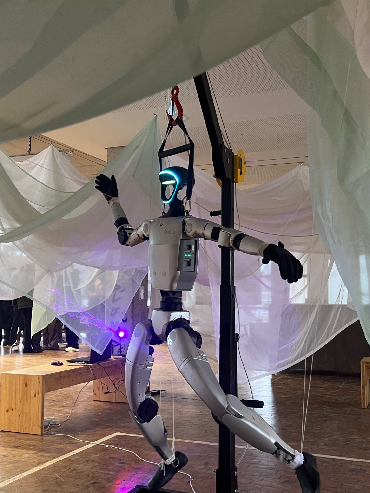
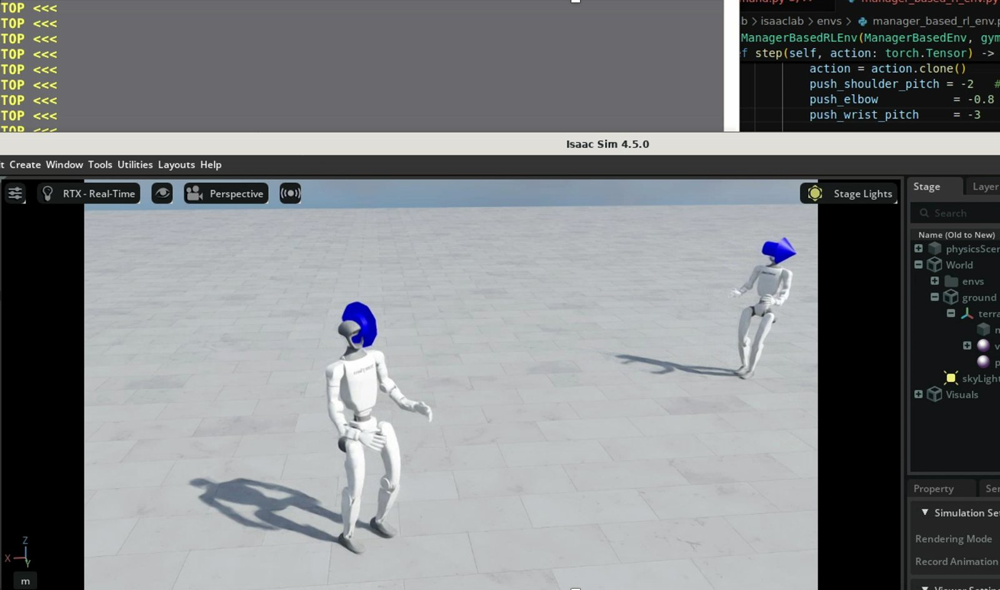
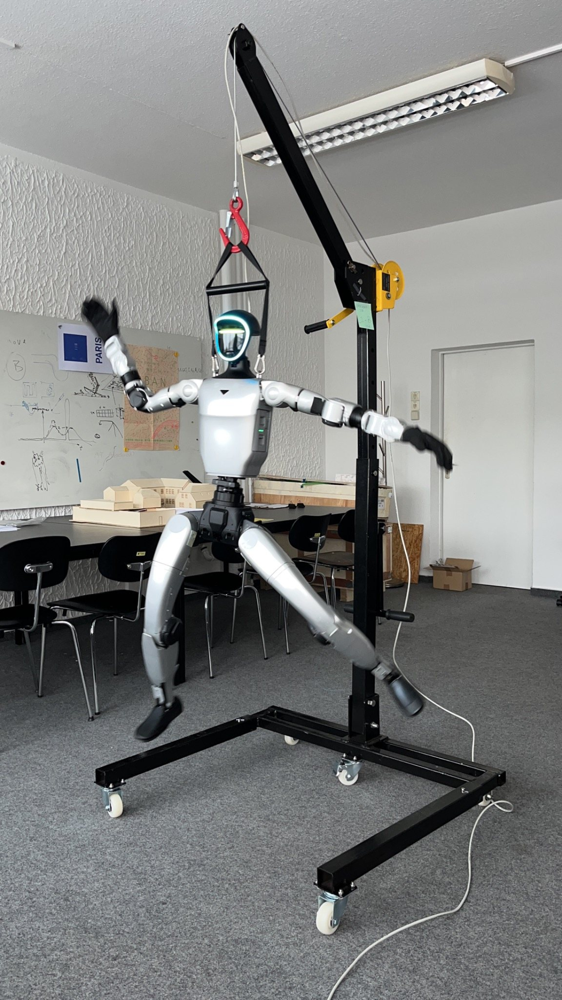
Open discussions around APIs, robot control, deployment, sensors, safety checks, calibration and reproducible setup notes.
Shared work with MuJoCo, Isaac Sim and custom simulation pipelines for testing before moving to hardware.
Methods for remote control, task recording, data collection and practical human-in-the-loop workflows.
Policies, reward design, sim-to-real transfer, locomotion, manipulation and benchmark exchange.
Humanoid robots in architectural, construction, fabrication and public demonstration contexts.
Collecting tutorials, lessons learned and technical instructions so new teams can move faster.
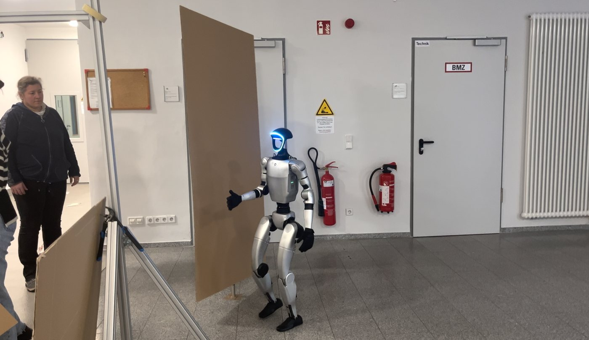
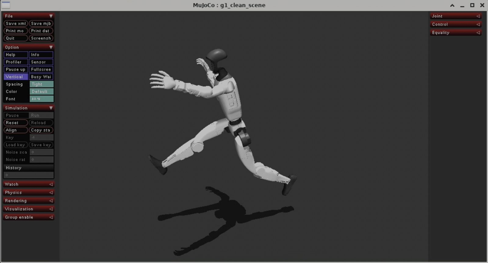
Institute of Architecture · Chair of Digital Design Methods · Digital Fabrication Lab
Marine Lemarie · Ilija Vukorep
IMES · Institute of Mechatronic Systems
Dennis Bank
Chair of Applied Mechanics
Tomas Slimak
Chair of Construction Machinery
Tom Volz
Humanoid robotics, automation and applied research
Prof. Dr. Thomas Ihme
Robotics and Automation · Scientific Automation
Sebastian Prinz
DLR School Lab at BTU
Beatrix Altmeyer
Innovation Lab for Advanced Industrial Engineering
Diego Enciso · Daniela Zarnetta · Eduardo Koscianski
Chair of Cyber Physical Systems
Sai Puneeth Gottam
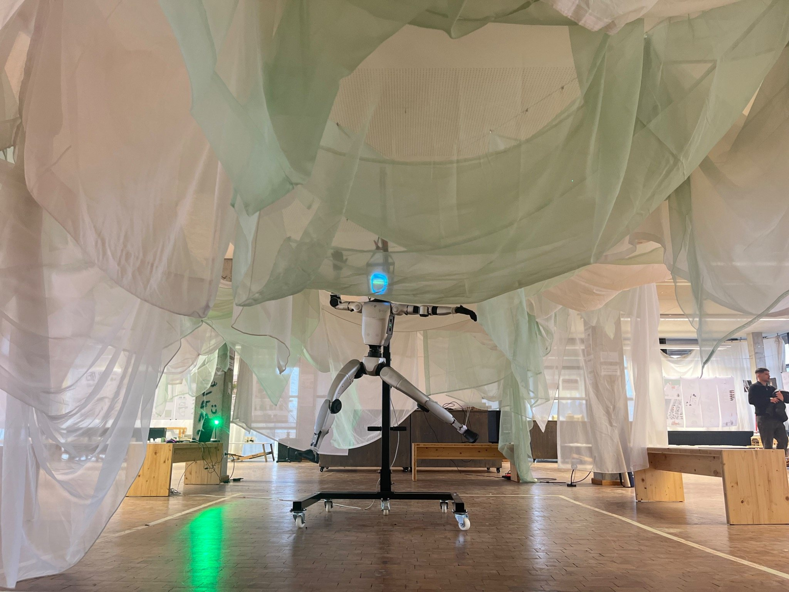
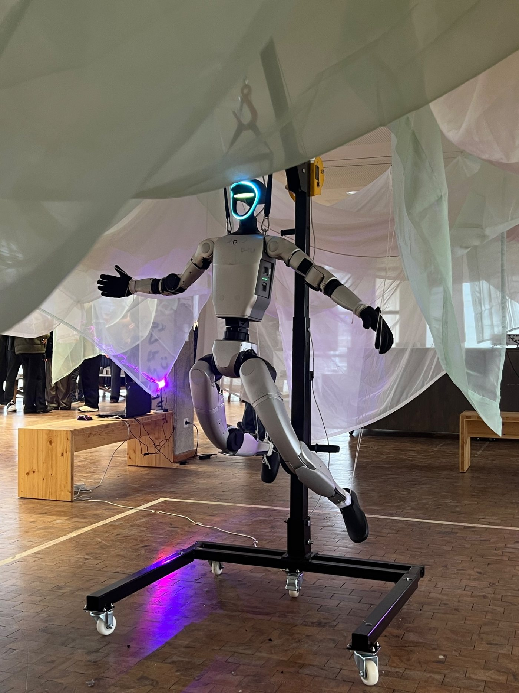
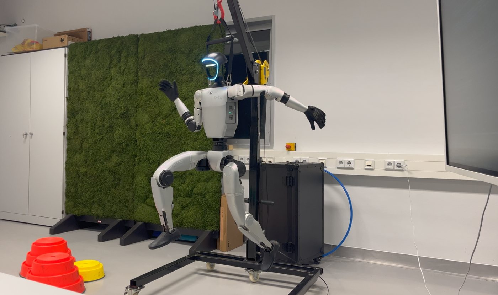
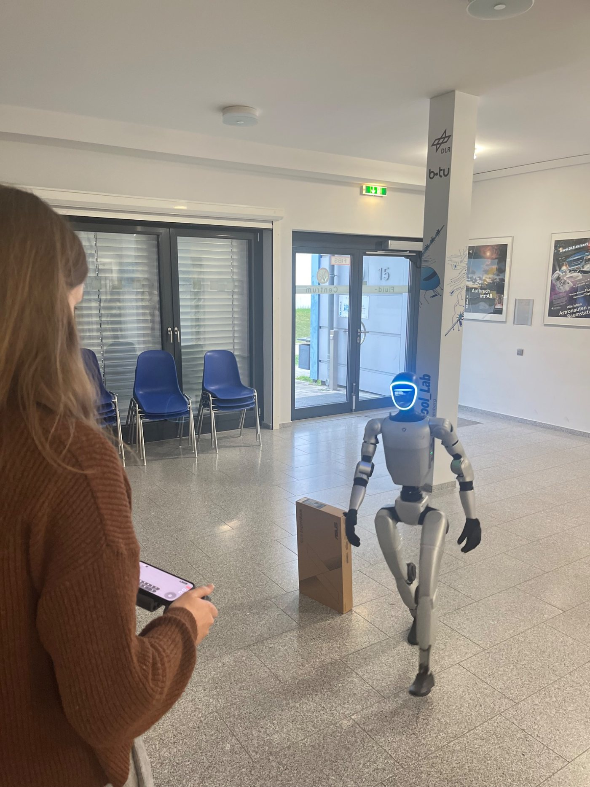
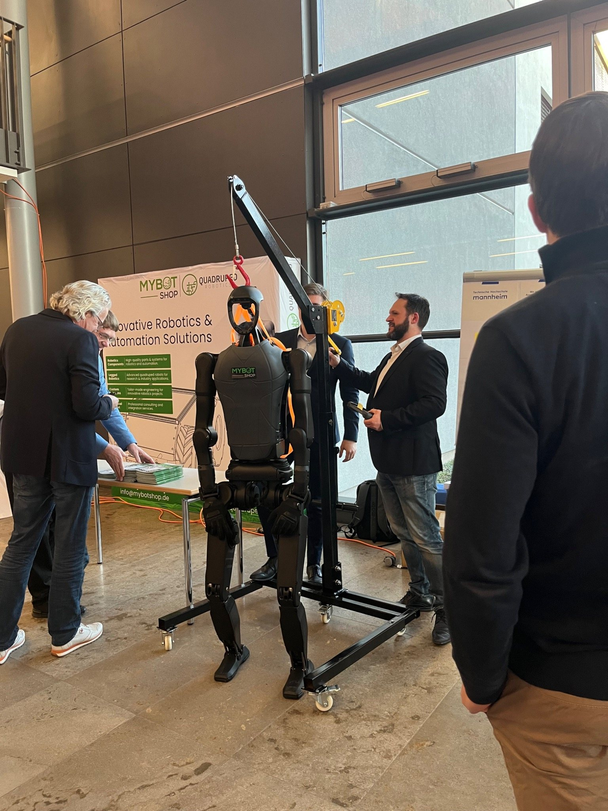
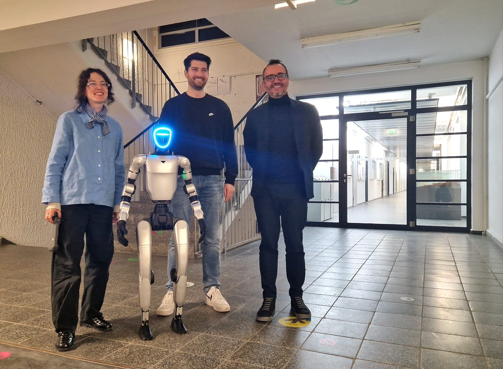
First collaboration between labs and researchers working with humanoid robots in Germany and Austria.
Presence at neu/wagen - 1. Anwendertag der humanoiden Robotik, with realistic discussion of applications, requirements and current limitations.
Code examples, troubleshooting sessions, tutorials, hardware notes, simulation exchange and collaborative research projects.
Join the network